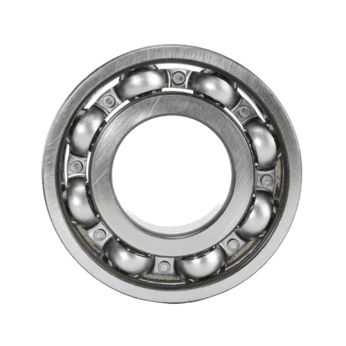

Baixo atrito, alta rotação e confiabilidade.
Para motores, redutores, linhas industriais, implementos e conjuntos rotativos.
SKF na Sueca
Rolamentos, mancais e soluções SKF para indústria e agro, com produtos originais e orientação técnica da Sueca.

Seleção técnica para sua aplicação industrial ou agrícola.
Produtos SKF em foco
Rolamentos, mancais e lubrificação para operações que dependem de precisão, resistência e disponibilidade.
Para motores, redutores, linhas industriais, implementos e conjuntos rotativos.

Unidades prontas para uso, com alojamentos robustos e relubrificação planejada.

Graxas, pistolas e ferramentas MAPRO para controlar excesso, falta e contaminação.
A força da SKF
A tecnologia SKF chega à sua operação através da experiência e estrutura da Sueca: produtos originais, suporte técnico e leitura correta das condições de aplicação.

Produtos originais e acesso ao portfólio SKF com atendimento especializado.
Estrutura e capacitação reconhecidas para atuar com soluções SKF.
Conhecimento das necessidades do campo: poeira, vibração e operação severa.
Apoio para identificar a solução adequada para carga, rotação e ambiente.
Portfólio SKF
Da precisão industrial à resistência exigida pelo campo, a Sueca oferece soluções SKF para diferentes etapas da operação.
Soluções para diferentes cargas, velocidades e condições de operação.
Montagem, suporte e proteção para conjuntos rotativos.

Proteção contra contaminantes e perda de lubrificante.
Aplicação adequada e automatizada para maior confiabilidade.

Lubrificantes para diferentes temperaturas, cargas e ambientes.

Montagem, desmontagem, manutenção e monitoramento com mais segurança.
Industrial x Agrícola
Para aplicações que exigem estabilidade, desempenho em rotação e eficiência operacional.
Para campo, contaminação, vibração, umidade e variações severas de operação.
Ciclo de vida do rolamento SKF
Montagem, lubrificação, alinhamento, monitoramento e desmontagem influenciam a vida útil do rolamento. Produtos e ferramentas SKF ajudam em cada etapa.
Certificações
Acesso a produtos originais SKF e suporte de uma rede qualificada.
Capacitação técnica para atuar com soluções e boas práticas SKF.
Especialização em aplicações agrícolas e ambientes de alta contaminação.
FAQ
O aquecimento pode envolver carga, rotação, lubrificação, montagem, vedação, folga e temperatura. A escolha correta depende da aplicação. Fale com a Sueca para avaliar o caso.
Vida útil reduzida pode vir de montagem inadequada, contaminação, lubrificação incorreta ou ferramenta errada. As ferramentas MAPRO ajudam a proteger o rolamento desde a instalação.
A seleção considera carga, velocidade, ambiente, contaminação, espaço disponível, vedação, montagem e lubrificação. A Sueca pode apoiar a identificação da solução SKF adequada.
A Sueca é Distribuidora Autorizada SKF. Para verificação adicional, utilize os canais oficiais da SKF, incluindo o aplicativo Authenticate. Saiba como verificar.
Um rolamento costuma reunir anel interno, anel externo, elementos rolantes e gaiola. A pista é o canal nos anéis por onde os elementos rolantes circulam.
Ainda ficou com alguma dúvida?
Precisa de orientação para escolher o produto ideal? Nossa equipe está pronta para ajudar.